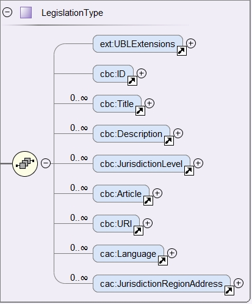

3.2 Legislation
The XSD schema below shows, in blue, the elements of the component cac:Legislation used to point at the legislation related to the criterion.

Figure 35. cac:Legislation. XSD Schema
Expected elements
Table 21. Legislation, expected elements
Class name: |
cac:Legislation |
Definition: |
A class to make reference to the legislation related to the criterion. |
Business rule(s): |
Common (BR-TC-08, 2. BR-OTH-01, BR-OTH-01#9, BR-OTH-03) |
File: |
dist/common/xsdrt/UBL-CommonAggregateComponents-2.3.xsd |
Path: |
/QualificationApplicationRequest/cac:TenderingCriterion/cac:Legislation |
| Components | Type | Card | Description | Requirements |
|---|---|---|---|---|
cbc:LegislationTitle |
Text |
1..n |
Title of the legislation. |
Information Requirement: tbr070-013. Rule: The complete title of the legislation provided as in the original legal text. At a later stage it might be provided by e-CERTIS (e.g.'DIRECTIVE 2014/24/EU OF THE EUROPEAN PARLIAMENT AND OF THE COUNCIL of 26 February 2014 on public procurement and repealing Directive 2004/18/EC'). Can be provided in several languages, but if LanguageID not specified it defaults to en (English). Rule scope: Common (BR-TC-09) |
cbc:Description |
Code |
0..n |
Textual short description of the legislation. |
Information Requirement: tbr070-013 Rule: The description of the legislation provided in the original legal text SHOULD be provided. At a later stage they might be provided by e-CERTIS. Can be provided in several languages, but if LanguageID not specified it defaults to en (English). Rule scope: Common (BR-TC-10) |
cbc:JurisdictionLevel |
Text |
0..n |
Jurisdictional level of a particular legislation. |
Information Requirement: tbr070-013 Rule: Although this is a text. Can be provided in several languages, but if LanguageID not specified it defaults to en (English). |
cbc:Article |
Text |
0..n |
Textual description of the article of the legislation. |
Information Requirement: tbr070-013 Rule: Other articles where the Criterion is referred to SHOULD also be provided. At a later stage they might be provided by eCERTIS. Can be provided in several languages, but if LanguageID not specified it defaults to en (English). Rule scope: Common (BR-TC-11) |
cbc:URI |
Identifier |
0..1 |
URI that points to a legislation related to this criterion. |
Information Requirement: tbr070-013 Rule: In the case of European legislation, the URL MUST point at the multilingual EUR-LEX web-page; e.g. Directive 2014/24/EU. |
XML Example
Snippet of XML to illustrate how to use the cac:Legislation component inside a criterion:
<cac:TenderingCriterion>
_<!-- ... elements omitted for brevity -->_
<cac:Legislation>
<cbc:ID schemeID="criterion" schemeAgencyID="EU-COM-GROW" schemeVersionID="3.0.0">4ea7a10a-643e-4022-b67e-e06573b28ff5</cbc:ID>
<cbc:Title>DIRECTIVE 2014/24/EU OF THE EUROPEAN PARLIAMENT AND OF THE COUNCIL of 26 February 2014 on public procurement and repealing Directive 2004/18/EC</cbc:Title>
<cbc:Description>DIRECTIVE 2014/24/EU OF THE EUROPEAN PARLIAMENT AND OF THE COUNCIL of 26 February 2014 on public procurement and repealing Directive 2004/18/EC</cbc:Description>
<cbc:JurisdictionLevel languageID="en">EU Directive</cbc:JurisdictionLevel>
<cbc:Article>57(1)</cbc:Article>
<cbc:URI>http://eur-lex.europa.eu/legal-content/ES/TXT/?uri=celex%3A32014L0024</cbc:URI>
</cac:Legislation>
_<!-- ... elements omitted for brevity -->_
</cac:TenderingCriterion>-
Use the UUID provided by GROW.
-
The official long title of the legislation is expected in the Title.
-
The short name that is commonly used to refer to the legislation is expected in the Description.